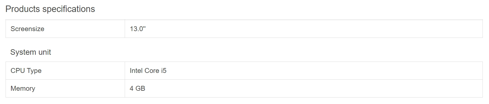
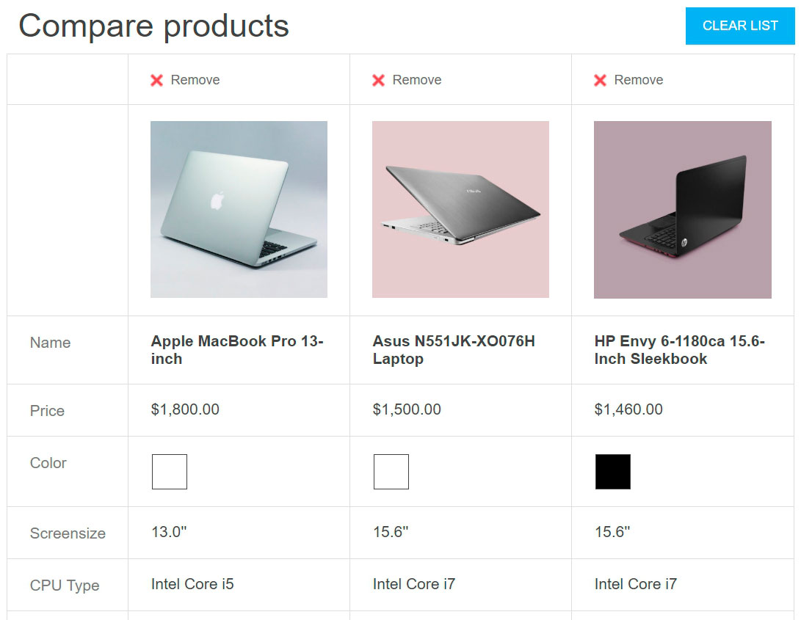
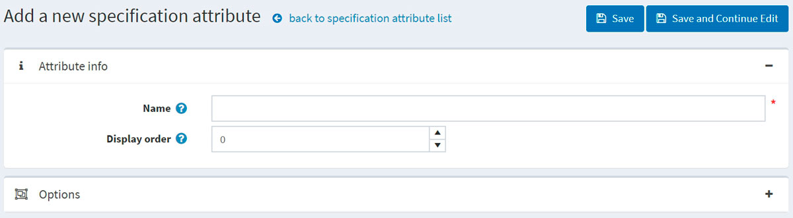

Specification attributes
Specification attributes are similar to product attributes; however, they are only used for information (visible on the product details page) and for filtering products on the category details page. They don't define product price and can't be used for inventory tracking.
Example
Let's say you are running an online computer store. What helps a customer to make a decision?
Provide a customer with comprehensive and descriptive information about your products. Although you fill the short and full descriptions of a certain computer, allow the customer to see the product's characteristics reflecting its most important details:

This table can be displayed on the product details page if you select the Show on product page field when adding a specification attribute to a product.
Allow your customers to search computers using the filter functionality. Let's say we can search in your store by CPU type and memory. Then, the category page will look as follows:

Select the Allow filtering field when adding a specification attribute to a product to allow filtering by this attribute for a certain product.
Include the "Compare products" functionality in your store. This feature uses specification attributes as well. For your computer store, the "Compare products" page will look as follows:

To enable the "Compare products" functionality, go to Configuration → Settings → Catalog settings. In the Compare products panel, select the 'Compare products' enabled checkbox.
The next section describes how to create specification attributes. Note that after creating a list of specification attributes, you will need to add the specification attributes to the products one by one. Learn how to add specification attributes to products in the Add products - Specification attributes section.
Create a specification attribute group
Note
All specification attributes that don't belong to any group are in the Default group (non-grouped specification attributes).
To view and edit a list of specification attributes and their groups, go to Catalog → Attributes → Specification attributes.

Click Add group to add a new group. The Add a new specification attribute group window will be displayed as follows:

In the Attribute group info panel, enter:
- The Name of the specification attribute group.
- The Display order number.
Then save the changes.
Create a specification attribute
Note
By default, there are no specification attributes precreated in nopCommerce.
To view and edit a list of specification attributes, go to Catalog → Attributes → Specification attributes.
On this page, you can delete specification attributes by selecting them and then clicking the Delete(selected) button.
Click Add attribute to add a new attribute. The Add a new specification attribute window will be displayed as follows:

In the Attribute info panel, enter:
- The Name of the specification attribute.
- The Display order number.
Click Save and continue edit to proceed to the Options editing panel.
Add a new option
Click the Add a new option button in the Options panel to create a new specification attribute option. The Add a new option window will be displayed as follows:

Define the following option settings:
- The Name of the specification attribute option.
- Select the Specify color checkbox to choose the color to be used instead of the option's text name (it will be displayed as a "color square").
- Choose the RGB color that will be displayed to customers.
- The Display order number.
Click Save to save the option details.
The following screenshot shows already added options:

Used by products
If you have applied the specification attribute to products, you can see the list of these products in the Used by products panel: